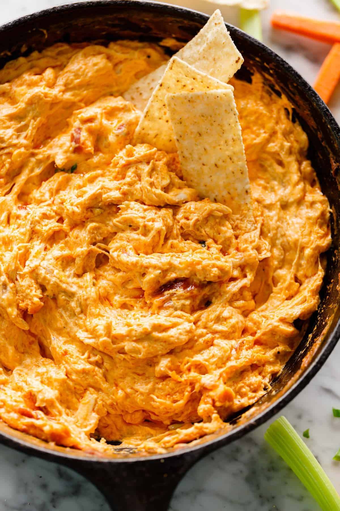

Buffalo Chicken Dip

Dip Recipe
Looking for a quick snack? A party food favorite? A great food addition to Saturday night football? Look no further. This buffalo chicken dip recipe will have your mouth watering in under 15 min!
Ingredient List
- 1 Block Cream Cheese
- 1/2 cup Shredded Cheddar Cheese
- 1/2 cup Ranch
- 2/3 cup Frank's Hot Sauce
- 1 Can Shredded Chicken
Steps
- In a pot, add ranch and frank's hot sauce
- In the same pot, mix the shredded chicken and cheese together with the wet ingredients
- Add block of cream cheese to the pot and turn stove on to medium heat
- Stir until cream cheese is completely mixed and enjoy!
Pro Tip: Serve with tortilla chips!
Return to Main Menu